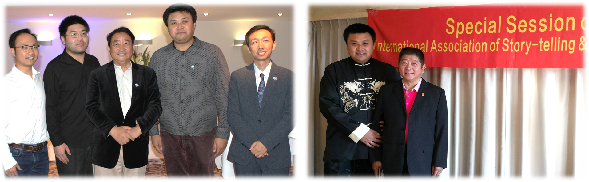
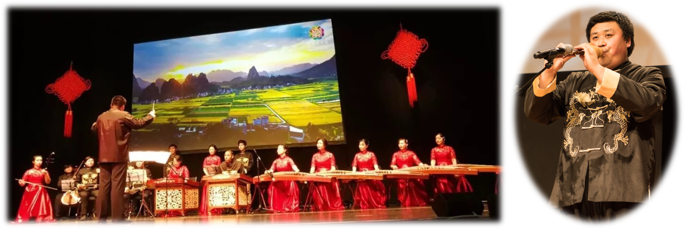
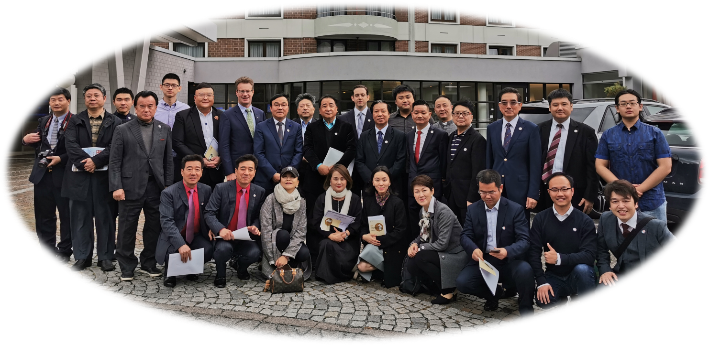
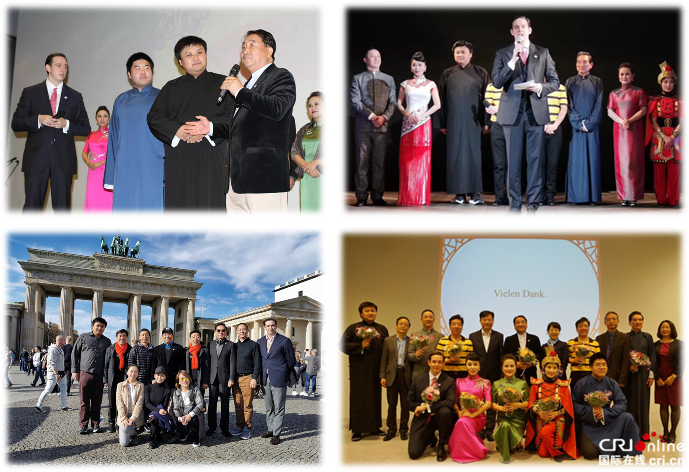
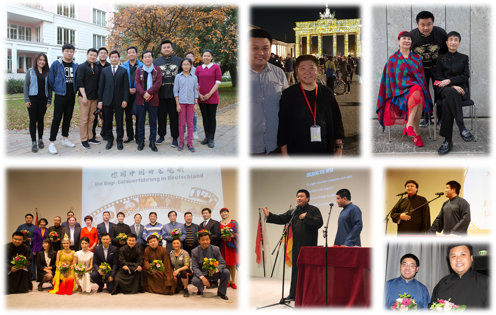
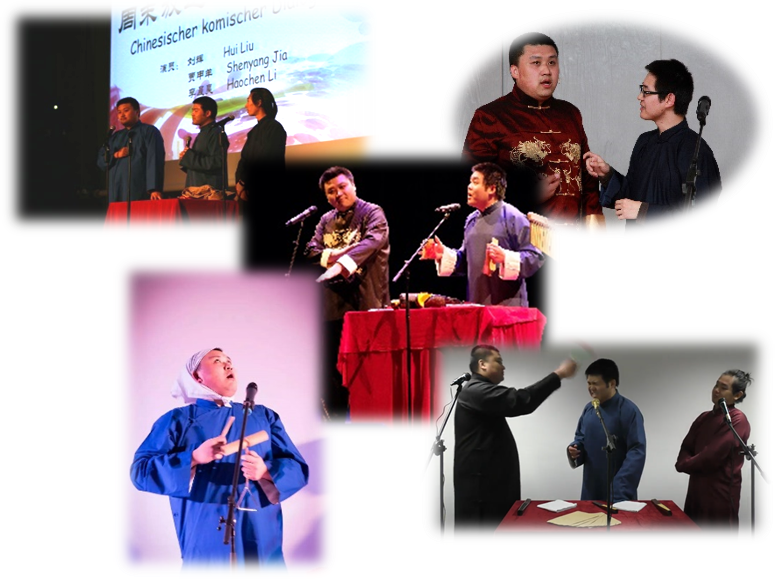

主要现任职务
| 德国曲协 主席 中国曲艺家协会 会员 |
|
| 国际说唱艺术联盟IASA 理事 |
 |
| 德国中华民乐社 社长/编曲/指挥 |  |
| 德国中华文化促进会 副会长 |
主要社会活动
|
德国中国话剧戏剧节（法兰克福） 担任评委/舞台表演讲座Workshop ● 第三届 巴黎中国文化中心 复旦大学报导 ● 第六届 文化部中国文化网 复旦大学报导 |
 |
|
柏林中国学友合唱团 担任即兴伴奏/排练指挥/合唱作词/男低音 ● 2019柏林—北京友好城市25周年演出 ● 2021疫情期间组织合唱团线上表演 |
 |
|
德国日本协会混声合唱团 ベルリン独日協会混声コ一ラス 担任理事/男高音 |
 |
| 德国钢琴即兴伴奏俱乐部 发起人/执教钢琴伴奏公益课程 | |
| 柏林喜歌剧院 特邀交响乐队演奏 |
演出经历摘要
2021年各大线上直播晚会和艺术活动● 北德地区春节晚会● 法兰克福孔子学院新春线上音乐会 ● 法兰克福孔子学院中华文化线上互动游园活动 ● 线上合唱作品《花瓣》混音、剪辑和后期工作 ● 第三届IASA国际说唱艺术研讨会 2020年各大线上直播晚会和艺术活动● 根据传统相声《酒令》改编抗疫相声《英雄令》● 组织德国曲协集体创作防疫快板 ● “大爱无疆”大型全球华人抗疫晚会 ● 第二届IASA国际说唱艺术研讨会 |
 |
2021疫情期间组织柏林中国学友合唱团线上合唱 《花瓣》 作曲：菅野よう子、编曲：郷間幹男 作词、合唱谱改编、混音合成、视频剪辑：刘辉 |
||||
2019年首届世界幽默艺术节（卢森堡）担任导演 中、日、加、卢、德、法等国著名艺术家参演 期间与会国际说唱联盟首届世界说唱艺术论坛 华商报（德国） 新浪新闻 第七届德国中国曲艺周汉堡专场和柏林专场 创作、表演相声《欢声笑语》 中央广播电视总台报导 今日头条 新浪 |
  |
汉堡演出片段 标清观看和下载链接： 卢森堡幕后花絮 与浪曲大師玉川奈々福 |
 |
|||
2018年第六届德国中国曲艺周柏林专场表演相声《杂学唱》，首创德语字幕相声 赴卢森堡参加国际说唱艺术联盟筹备会议 新华社 搜狐 华商报 中新社、国侨网 今日头条 柏林中国文化艺术中心
|
 |
演出片段和幕后花絮 标清观看和下载链接： |
||||
2016年以来德国曲协德国和欧洲相声专场担任策划人和相声演出工作 ● 【相声吧德】德国首次本土曲艺社专场 ● 【柏您一笑】柏林相声专场演出 ● 【布伦之恋】布伦瑞克相声专场演出 ● 【埃你一森】埃森相声专场演出 ● 【啊哼亚琛】亚琛相声专场演出 ● 【马德执掌】马格德堡相声专场演出 ● 法兰克福游船庆典相声专场演出 ● 波兰华沙春晚暨德国曲协刘辉、李晨昊专场 |
 |
德国首次相声专场花絮 标清观看和下载链接： |
媒体采访相关话题片段 标清观看和下载链接： |
|||
2015年中华人民共和国驻德意志联邦共和国大使馆新春招待会暨文艺晚会 担任节目遴选、钢琴伴奏工作 |
中华人民共和国驻德意志联邦共和国大使馆商务处新春商务招待会 担任总策划、主持人，参与演出工作 |
|||||
2013年“中德语言年”德国闭幕式文艺演出担任总导演、撰稿，参与多个节目演出 由中华人民共和国驻德意志联邦共和国 大使馆、教育处举办 |
 |
人民日报网络平台报导 标清观看和下载链接： 0:10 相声创作和表演；0:53 《欢沁》钢琴伴奏 |
媒体采访相关话题片段 标清观看和下载链接： 2017法兰克福春晚后台《德国新媒体》采访片段 |
|||
2009年以来欧洲各国历年华人春节联欢晚会相声、民乐、伴奏、乐队指挥等演出 春晚巡演德国近三十个城市以及奥地利、 比利时、西班牙、波兰等国，城市包括： 柏林、法兰克福、慕尼黑、杜塞尔多夫、 汉堡、德累斯顿、科隆、波恩、汉诺威、 不来梅、哥廷根、卡尔斯鲁厄、弗来堡、 斯图加特、马格德堡、布伦瑞克、埃森、 弗莱堡、沃尔夫斯堡、亚琛、帕德博恩、 凯撒斯劳滕、格赖夫斯瓦尔德、美茵茨、 达姆施塔特、克劳斯塔尔—采勒菲尔德、 波鸿、巴登苏尔察、布雷根茨、格拉茨、 林茨、因斯布鲁克、沃尔特湖畔韦尔登、 巴登、鲁汶、瓦伦西亚、华沙等 历届德国/欧洲各地春晚相声花絮总集 |
 欧华网（西班牙） 波兰华人联合会 搜狐 网易
|
2020—2021德国各城市及线上春晚相声花絮集 标清观看和下载链接： 2018德国/欧洲各城市春晚相声花絮集 标清观看和下载链接： |
2019德国各城市春晚相声花絮集 标清观看和下载链接： 2017及之前德国各城市地春晚相声花絮集 标清观看和下载链接： |
|||
|
个人独奏音乐会/率团参加音乐会或文艺演出 受中、欧各国官方文化交流机构邀请 ● 北京市旅游局波兰华沙文化推广活动暨音乐会 ● 北京电视台与德国媒体战略合作签约暨音乐会 （民乐和西洋乐器五重秦作品《茉莉花》首演） ● 海南省旅游局柏林文化推广活动暨音乐会 ● 浙江省旅游局柏林文化推广活动暨音乐会 ● 柏林—北京友好城市25周年柏林音乐会 ● 柏林市动物园欢迎中国大熊猫专场音乐会 ● 柏林世界公园历年中秋节、樱花节数十场演出 ● 柏林孔子学院新年音乐会 ● 柏林孔子学院“科学长夜”中国文化音乐会 ● 不来梅孔子学院春节音乐会 ● 不来梅五大洲文化节闭幕式个人独奏音乐会 ● 不来梅福克博物馆世界文化音乐会 ● 法兰克福孔子学院新年特别音乐会 ● 法兰克福书展莫言《带灯》发布会暨音乐会 ● 杜塞尔多夫中国文化节民乐专场 ● 马格德堡中德大学教育合作春节招待音乐会 ● 伍珀塔尔亚洲艺术博物馆中秋文艺晚会 ● 卡尔斯鲁厄德中友好协会中华文化进校园活动 ● 巴德苏尔察温泉现场直播水下音乐会 2018巴德苏尔察现场直播水下音乐会采访和花絮 |
 2018国务院侨办春节晚会指挥法兰克福民乐团 标清观看和下载链接： |
创意民乐《儿时回忆》（历年德国春晚花絮） 标清观看和下载链接： 创意民乐《点石聚银月》（历年德国春晚花絮） 标清观看和下载链接： 创意民乐《冬满银月》（历年德国春晚花絮） 标清观看和下载链接： 创意民乐《点映银月》（历年德国春晚花絮） 标清观看和下载链接： |
2020柏林世界公园独奏音乐会《秋·月·夜》花絮 标清观看和下载链接： 2021法兰克福孔子学院新年特别音乐会花絮 2022—2023德国多地《欧洲礼赞》花絮 标清观看和下载链接： |
|||
2005年—2007年上海交通大学各类市级、校级文艺演出二十余场上海交通大学相声协会初创期成员 ● 110周年校庆晚会创作、表演相声《酒令说楼》 ● “相剧”第二届相声小品晚会表演相声《汾河湾》 ● 相声剧《Dong十三楼》编剧/平面/伴奏/演出 ● 相声剧《第二天·唐》群口相声创作/表演 ● 各类市级/校级/院级文艺晚会表演相声二十余场 ● “统一100杯”上海市创意表演大赛第一名 ● 电子信息与电气工程学院04级赴德学生音乐会 |
在交大相声社建社初期加入。创作和表演的理念是 2006交大相声剧II《Dong十三楼》花絮 2007交大相声剧III《第二天·唐》花絮
本科学习时得到广泛接触大舞台的机会和磨练 |


艺术获奖摘要
| 2020—2022 | “文化中国·水立方杯”中文歌曲大赛 | 指导多位学生分获金奖（2020、2021、2022）、银奖（2021）和特别奖（2022） |
| 2019 | 第十四届中国国际合唱节 | 作词和合唱谱改编作品《花瓣》获银奖 |
| 2019 | 慕尼黑春晚 | 创意民乐表演和相声表演获观众现场投票最受欢迎节目奖 |
| 2018 | 哥廷根春晚 | 创意民乐表演、相声表演分获观众现场投票最佳节目第一、第二名 |
| 2017 | 伍珀塔尔亚博中秋文艺演出 | 单口相声和快板表演获最佳表演奖 |
| 2016 | 哥廷根春晚 | 创意民乐表演获观众现场票最佳节目第一名 |
| 2015 | 克劳斯塔尔—采勒菲尔德春晚 | 相声表演获观众现场票最佳节目第一名 |
| 2005 | “统一100杯”上海市创意表演大赛 | 创作、表演相声作品《洗澡》获第一名 |
| 青少年时期 | 各类市、区、校级舞台剧、朗诵、戏曲等文艺竞赛 | 多次获得金/银奖、一/二/三等奖、最佳表演奖等 |
艺术讲座摘要
同济大学中德工程学院 德国杜塞尔多夫 2018 |
● 讲座：学术与艺术 |  |
法兰克福大学孔子学院 德国法兰克福 2019 |
● 讲座：从剧本到舞台：业余表演爱好者的自我训练 |
音乐作品举隅
作词、作曲、编曲和译配作品 | |
|
● 《琉歌·心中绽放的花》 中文作词：刘辉 原曲『花~すべての人の心に花を~』 作詞·作曲：喜納昌吉 |
中文词 + カバー |
|
● 《微风万千》 中文作词：刘辉 原曲『千の風になって』 日本語詞·作曲：新井満 中文合唱谱（合唱編曲：田中達也） |
中文演唱：仇宗昕 |
|
● 《花瓣》 中文作词：刘辉 原曲『花は咲く』 作曲：菅野よう子 作詞：岩井俊二 中文合唱谱（合唱編曲：郷間幹男） |
天津大学北洋合唱团于第六届济南国际合唱节演出 指挥：温雨川 标清观看和下载链接： |
|
● 三部无伴奏合唱《新编五连环》 合唱编曲：刘辉 根据天津快书弦曲以及仲伟成《五连环》记谱改编 |
A capella合唱谱 |
| ● 《李商隐和李察德》 作词·作曲：刘辉 | 整理上传中 |
|
● 《爱闪闪》 中文作词：刘辉 原曲『愛燦燦』 作詞·作曲：小椋佳 |
整理上传中 |
|
● 《大地之星》 中文作词：刘辉 原曲『地上の星』作詞·作曲：中島みゆき |
整理上传中 |
|
● 《如川流淌》 中文作词：刘辉 原曲『川のながれのように』 作詞：秋元康、作曲：見岳章 |
整理上传中 |
|
● 《釜山港》 中文作词：刘辉 原曲《돌아와요 부산항에》 作詞·作曲：黄善雨 |
整理上传中 |
|
● 《闪着泪光》 中文作词：刘辉 原曲『涙そうそう』 作詞：森山良子、作曲：BEGIN |
整理上传中 |
|
● 《朝花之歌》 中文作词：刘辉 原曲『朝花』作詞·作曲：樋口了一 |
整理上传中 |
|
● 《海鸥飞翔》 中文作词：刘辉 原曲『かもめが翔んだ日』 作詞：伊藤アキラ、作曲：渡辺真知子 |
整理上传中 |
|
● 《花生工之歌》 中文作词：刘辉 原曲"Kaming Magmamani"（菲律宾民歌） 作曲：Lucio San Pedro |
整理上传中 |
|
● 《天蝎女人》 中文作词：刘辉 原曲『さそり座の女』 作詞：斎藤律子、作曲：中川博之 |
整理上传中 |
|
● PC游戏《圣·三国志英杰传》 第一至四季游戏主题音乐作曲、徐州之战编曲及 音乐制作和合成、人物列传创作、关卡剧本创作 |
版权所有，请于正版游戏内视听 |
器乐和声乐录音 | |
|
● 加键葫芦丝独奏《荷塘月色》 词曲：张超、编曲：牛曲坡 |
|
|
● 钢琴弹唱《茉莉花》（河北民歌） （间奏为江苏民歌《茉莉花》） 标清视频/下载 音频 |
|
|
● 葫芦丝独奏《一剪梅》 作词：娃娃、作曲和编曲：陈信义 标清视频/下载 音频 |
|
|
● 民族歌曲《吐鲁番的葡萄熟了》 作词：瞿琮、作曲：施光南、原唱：罗天蝉 |
|
演歌·歌謡曲カバー選 | |